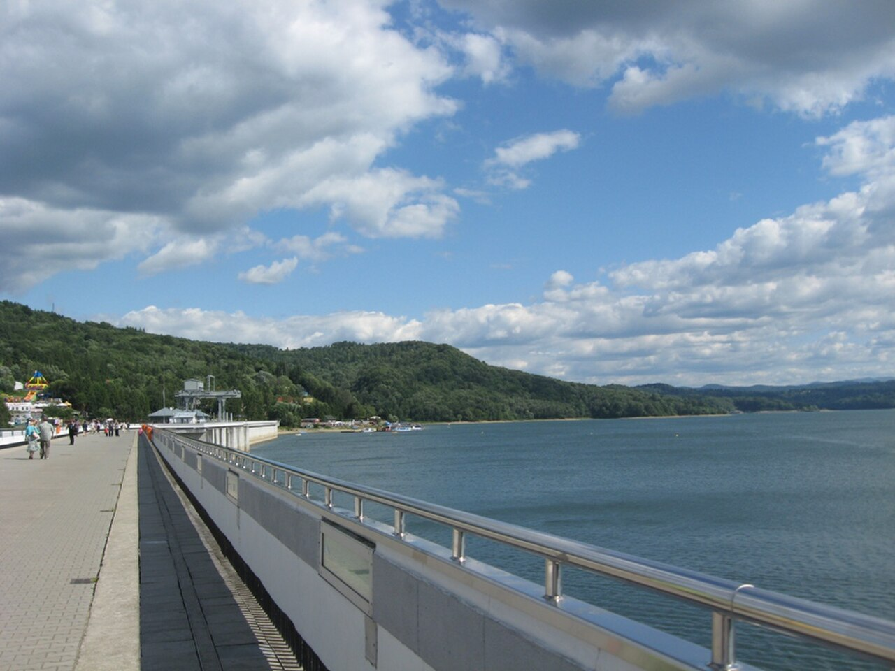
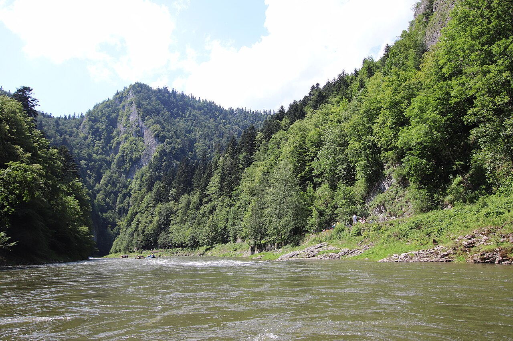
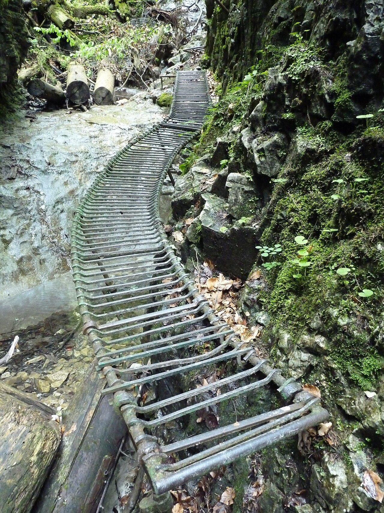
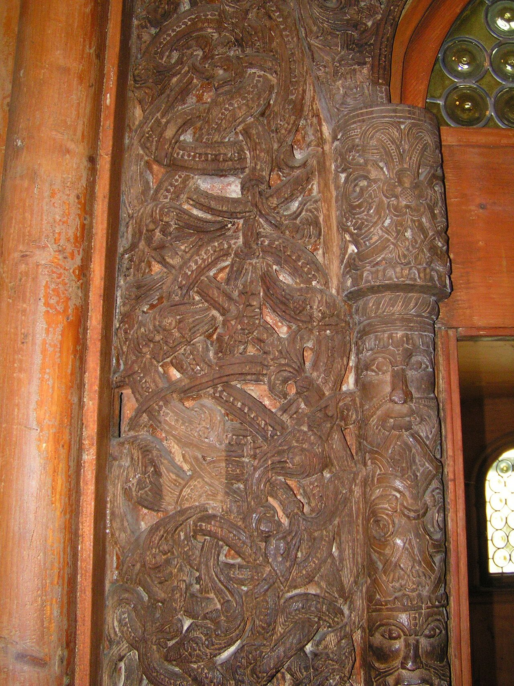
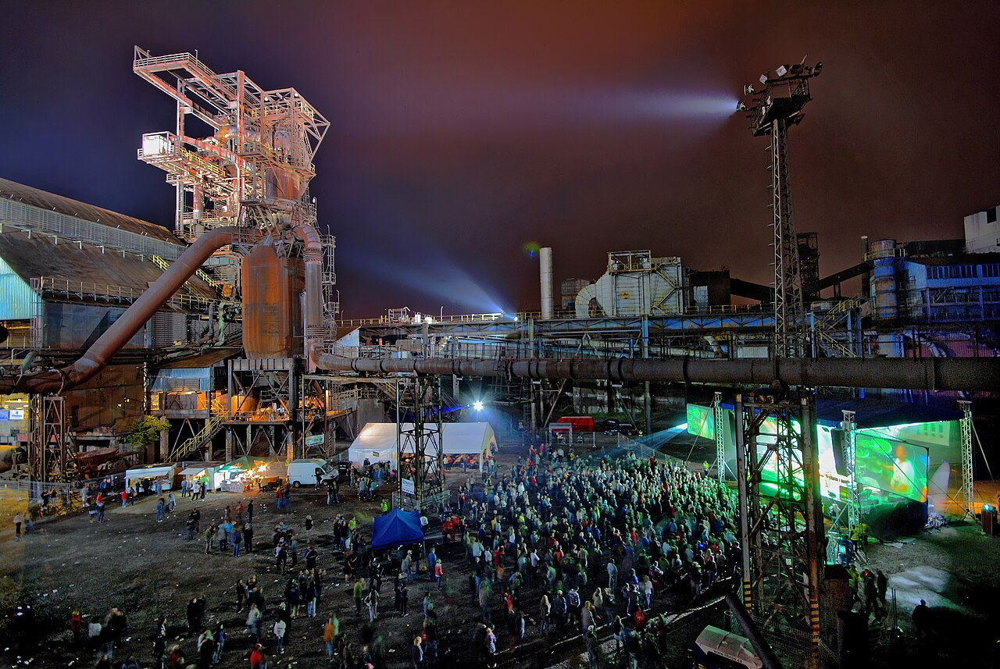
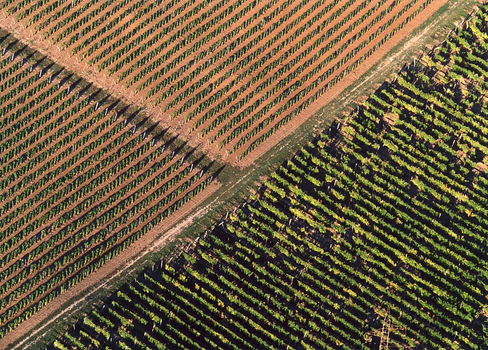
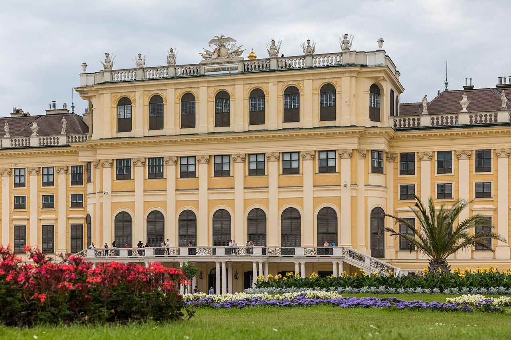
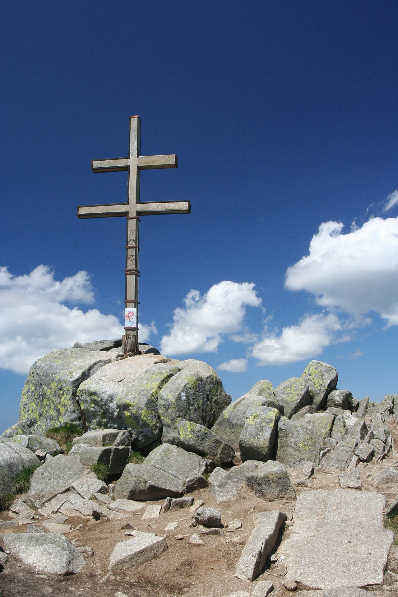
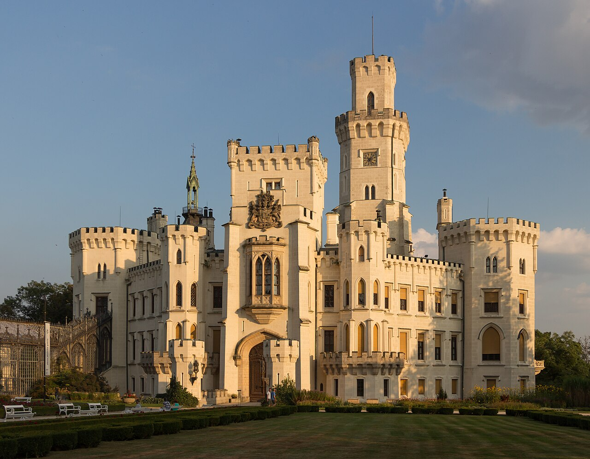

| Day | Plan |
|---|---|
| Thu 18 Jun | Drive → Solina. Walk the dam, rent a boat or kayak on the lake. Dinner with a view. |
| Fri 19 Jun | Tarnica peak or Połonina Wetlińska ridge hike. Pack a picnic for the summit. |
| Sat 20 Jun | Horse-drawn cart through the hills or museum visit. Evening bonfire with oscypek. |
| Sun 21 Jun | Depart 6:00 AM → Kraków ~9:30 AM. |

| Day | Plan |
|---|---|
| Thu 18 Jun | Drive to Szczawnica. Evening promenade walk, dinner at a local karczma. |
| Fri 19 Jun | Dunajec River rafting (Sromowce → Szczawnica, ~2h). Afternoon hike to Trzy Korony. |
| Sat 20 Jun | MTB in Pieniny or hike Sokolicy. Czorsztyn Castle ruins. |
| Sun 21 Jun | Morning walk 7:00. Depart 8:00 → Kraków ~9:30. |

| Day | Plan |
|---|---|
| Thu 18 Jun | Drive to Dedinky. Walk Palcmanská Maša lake, paddleboat. Dinner at Koliba u Frice. |
| Fri 19 Jun | Suchá Belá gorge hike — ladders, cascades, photo paradise. ~4h. |
| Sat 20 Jun | Dobšinská Ice Cave tour. Afternoon: Tomášovský výhľad viewpoint or lake relax. |
| Sun 21 Jun | Depart 7:30 → Kraków ~9:30. Breakfast before leaving. |

| Day | Plan |
|---|---|
| Thu 18 Jun | Early start → Karpacz. Visit Wang Church, walk the town. |
| Fri 19 Jun | Cable car + ridge hike to Śnieżka summit. Sunset on the mountain. |
| Sat 20 Jun | Góry Stołowe: Błędne Skały labyrinth + Szczeliniec Wielki. Unreal landscapes. |
| Sun 21 Jun | Depart 5:30 → Kraków ~9:30. Pack Saturday night. |

| Day | Plan |
|---|---|
| Thu 18 Jun | Drive → Ostrava. Evening at Dolní Vítkovice + Bolt Tower sunset. |
| Fri 19 Jun | Landek Park mining museum (underground train). Zoo or Water World Sareza. |
| Sat 20 Jun | Day trip: Štramberk fairy-tale town or Hukvaldy Castle. Czech beer tasting. |
| Sun 21 Jun | Depart 7:00 → Kraków ~9:30. Breakfast on the road. |

| Day | Plan |
|---|---|
| Thu 18 Jun | Drive via Rzeszów & Dukla Pass. Check into a cellar guesthouse. Evening tasting. |
| Fri 19 Jun | Tour 2–3 wineries (Disznókő, Oremus, Hétszőlő). Cellar tour + tasting. Lunch on Tokaj's square. |
| Sat 20 Jun | Sárospatak Castle or Zemplén Hills hike. Rustic csárda dinner with live music. |
| Sun 21 Jun | Depart 6:00 → Kraków ~9:30. Buy wine Saturday instead. |

| Day | Plan |
|---|---|
| Thu 18 Jun | Early start → Vienna. Walk Ringstraße, Stephansdom. Heurigen dinner. |
| Fri 19 Jun | Schönbrunn Palace + gardens. Hofburg & Sisi Museum. Prater & Riesenrad. |
| Sat 20 Jun | Kunsthistorisches or Belvedere (Klimt). Or day trip to Wachau Valley. |
| Sun 21 Jun | Depart 5:00 → Kraków ~9:30. Pack everything Saturday night. |

| Day | Plan |
|---|---|
| Thu 18 Jun | Drive to Jasná or Liptovský Mikuláš. Walk the town, dinner by the Váh. |
| Fri 19 Jun | Ďumbier hike (1,843 m). Stunning ridge-line views. ~6h. Pack picnic. |
| Sat 20 Jun | Demänovská Ice Cave + Freedom Cave tours. Afternoon thermal pools. |
| Sun 21 Jun | Depart 6:00 → Kraków ~9:30. Chairlift on Saturday instead. |

| Day | Plan |
|---|---|
| Thu 18 Jun | Drive → České Budějovice. Budvar brewery tour + tasting. Dinner at Masné Krámy. |
| Fri 19 Jun | Český Krumlov day trip: castle, Vltava rafting, Old Town. Back for beer. |
| Sat 20 Jun | Hluboká Castle. Třeboň fish ponds cycling or Novohradské hike. |
| Sun 21 Jun | Depart 5:00 → Kraków ~9:30 via Brno. Quick breakfast before leaving. |